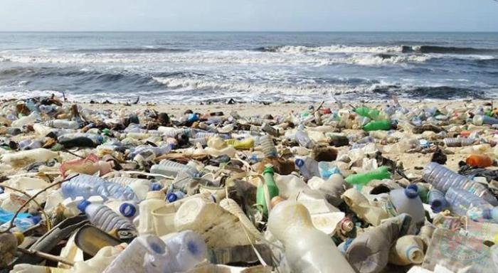
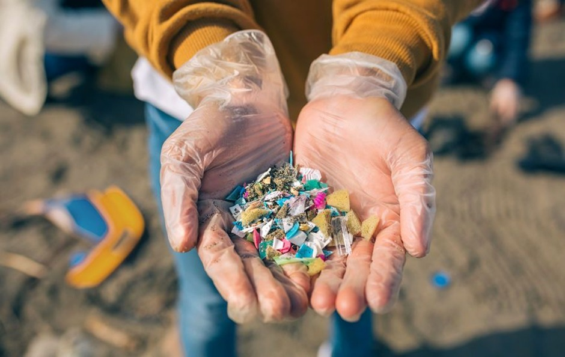
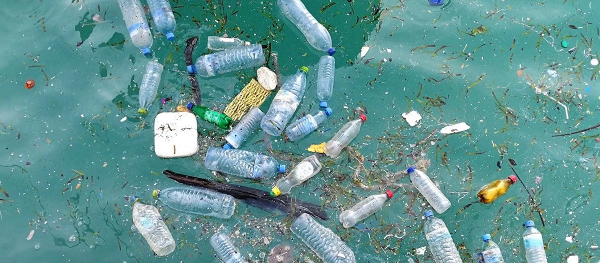
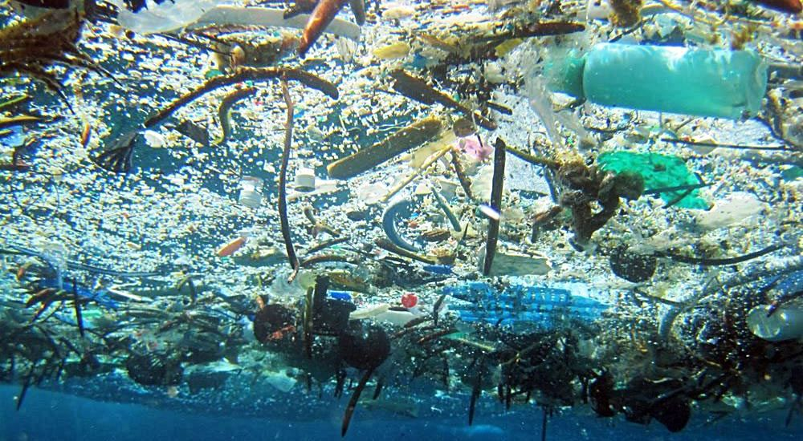

Materi singkat, bahasa mudah, dan game seru untuk anak & remaja. Pelajari apa itu mikroplastik, bagaimana dampaknya, dan langkah sederhana yang bisa kamu lakukan setiap hari.
Contoh sampah plastik dan situasi di laut agar mudah dibayangkan.




Bahasa sederhana + contoh biar cepat paham.
Mikroplastik adalah potongan plastik sangat kecil berukuran kurang dari 5 milimeter. Bentuknya bisa berupa serpihan, butiran kecil, atau serat halus.
Contoh mudah: remahan dari kantong plastik yang sobek, bintik-bintik kecil di pasir pantai, atau serat tipis dari baju olahraga saat dicuci.
Sumber sehari-hari yang sering kita jumpai.
Diproduksi langsung dalam ukuran kecil, seperti microbeads pada kosmetik, serat pakaian sintetis saat dicuci, dan partikel dari ban kendaraan.
Contoh: scrub wajah lama dengan bintik plastik kecil.
Hasil pecahan plastik berukuran besar yang hancur karena sinar UV, cuaca, dan gesekan.
Contoh: serpihan botol plastik yang terurai di laut.
Saat mencuci baju dari polyester/nylon, serat halus bisa lepas dan ikut air limbah.
Contoh: kaos olahraga, hoodie fleece, jaket parasut.
Ringkas, jelas, dan aman untuk anak.
Ikan, burung laut, dan penyu sering menelan plastik karena mirip makanan. Ini bisa membuat perutnya penuh plastik dan sakit.
Contoh: penyu mengira plastik bening adalah ubur-ubur.
Plastik sangat lama terurai (puluhan—ratusan tahun), sehingga menumpuk di pantai, sungai, dan laut, merusak kualitas tanah maupun air.
Contoh: sampah plastik tertimbun di pasir, lalu terbawa ombak kembali ke laut.
Mikroplastik bisa masuk lewat makanan laut, air minum, dan udara yang kita hirup. Penelitian masih berjalan untuk memahami dampak jangka panjangnya.
Contoh: garam laut yang mengandung jejak mikroplastik.
Langkah kecil yang bisa dilakukan di rumah & sekolah.
Gunakan botol isi ulang, bawa tas kain, pilih barang tahan lama daripada sekali pakai.
Contoh: bawa tumbler ke sekolah, isi ulang di dispenser.
Cuci baju sintetis penuh muatan (lebih sedikit gesekan), gunakan kantong filter serat, dan jemur alih-alih pengering.
Contoh: pakai laundry bag anti-serat.
Pisahkan sampah: organik, daur ulang (PET, PP, kertas), dan sampah lain. Cari bank sampah/TPST di daerahmu.
Contoh: botol PET bersih dijual ke bank sampah; tutup botol untuk kerajinan.
Setelah tahu bahayanya, mari menjaga lingkungan sekitar. Setiap langkah kecilmu — mengurangi plastik sekali pakai, memilah sampah, dan tidak membakar sampah — membantu melindungi banyak makhluk hidup di luar sana.
Pilih level, jawab 10 soal per level. Dapatkan skor dan naik ke level berikutnya!
Gerakkan penyelam (← ↑ → ↓ / WASD). Kumpulkan sampah plastik (＋1), hindari ubur-ubur (−1). Selesaikan target untuk naik level!
Kumpulan video pendek & penjelasan untuk menambah wawasan.
Sumber terpercaya untuk pendalaman materi. (Pisah: Internasional vs Indonesia)
Catatan: untuk keperluan LKTI, tulis daftar pustaka lengkap sesuai format lomba (APA/MLA) dan gunakan artikel spesifik (judul, penulis, tahun) dari situs di atas.